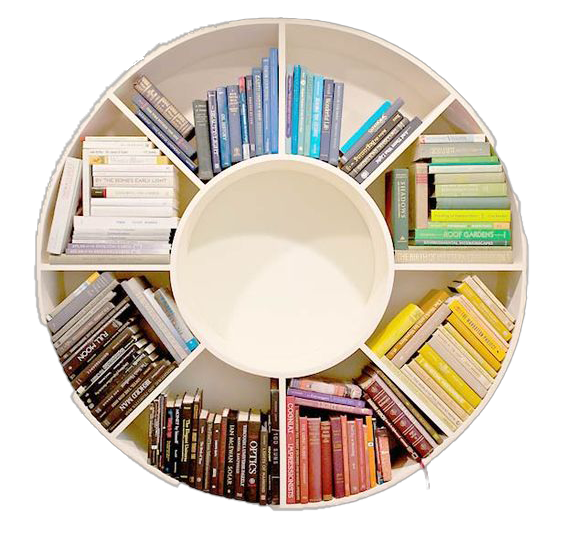
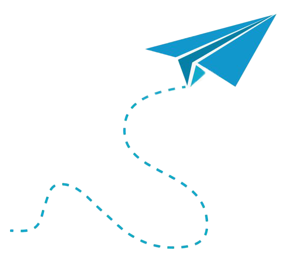
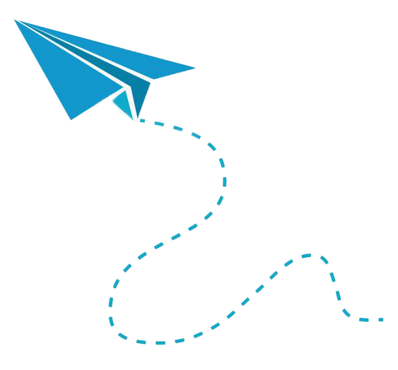
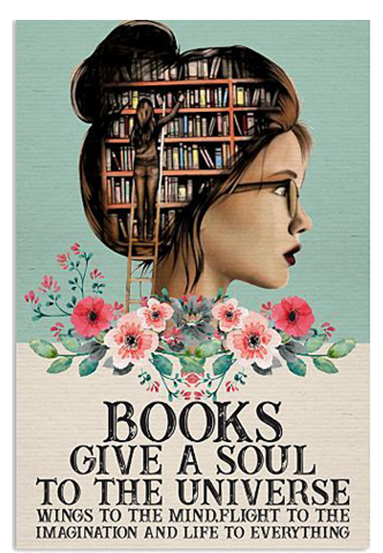
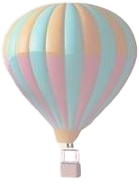
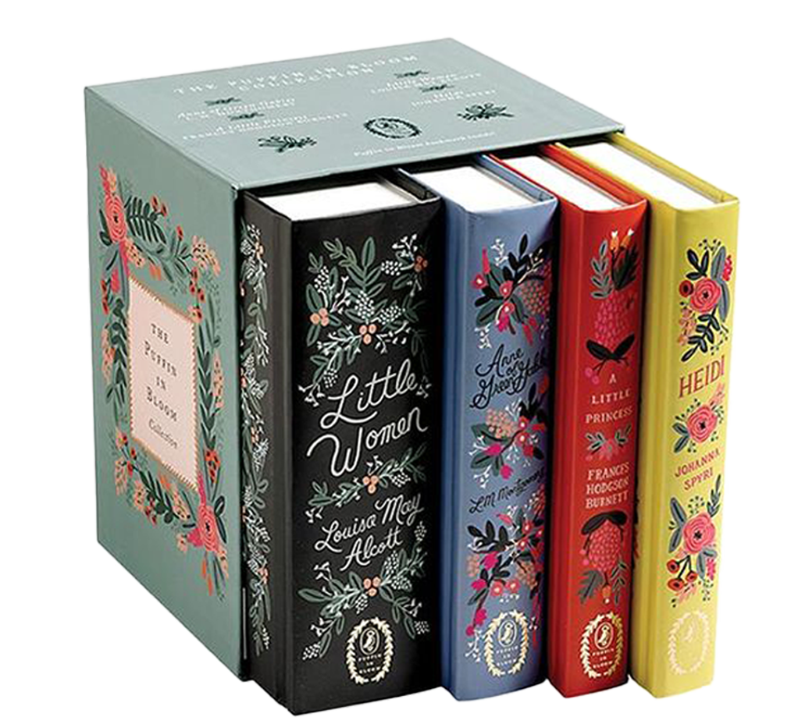
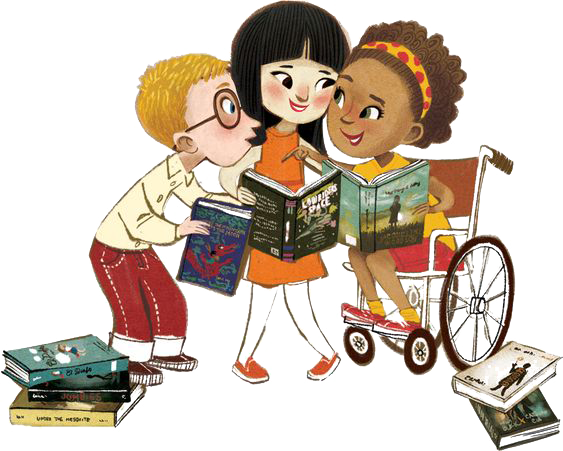
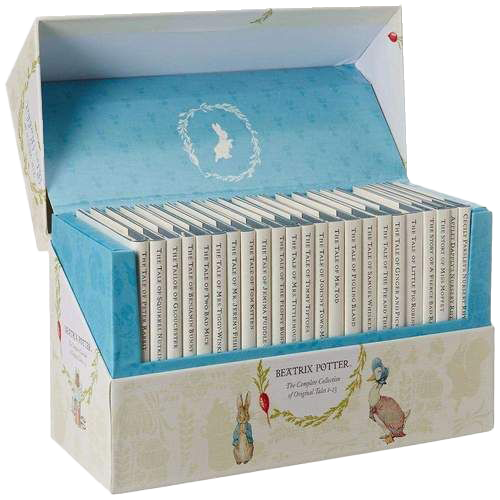
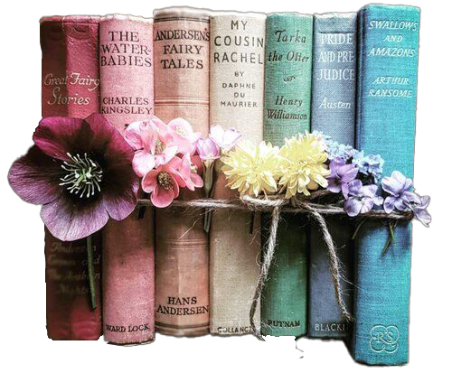
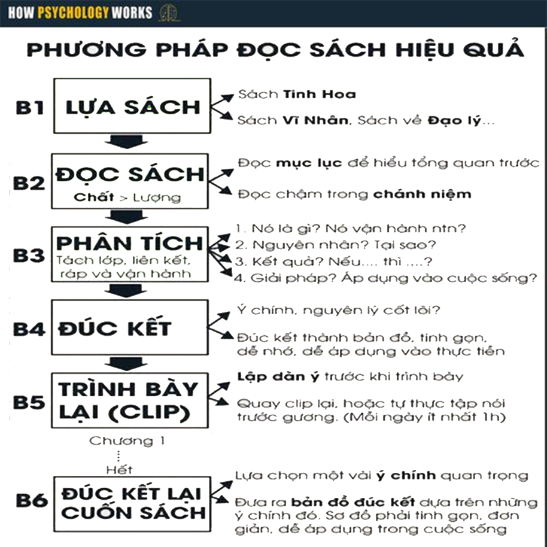

LÀM SAO ĐỂ?
KHƠI DẬY ĐAM MÊ ĐỌC SÁCH TRANG SÁCH-CÁNH CỬA TRI THỨC!
Đọc sách giúp chúng ta tiếp cận với kiến thức mới, khám phá các lĩnh vực khác nhau. Điều này mở rộng tầm nhìn và hiểu biết của chúng ta về thế giới xung quanh.SÁCH LÀ HÀNH TRANG CHO TÂM HỒN BAY CAO!
Đọc sách giúp chúng ta phát triển khả năng tưởng tượng, sáng tạo và diễn đạt ý tưởng, xây dựng câu chuyện, sử dụng ngôn từ một cách chính xác.KHÁM PHÁ THẾ GIỚI VỚI CUỐN SÁCH TRONG TAY!
Sách không chỉ là nguồn thông tin mà còn là phương tiện giao tiếp và truyền đạt ý kiến. Từ sách, chúng ta học cách diễn đạt ý tưởng, cảm xúc và suy nghĩ của mình.


Đọc sách là cánh cửa tới một thế giới mới, nơi mà những câu chữ trở thành những chìa khóa mở ra những kiến thức, trí tưởng tượng và trải nghiệm mới. Trong những trang sách, ta gặp gỡ những nhân vật sống động, trải qua những cuộc phiêu lưu hấp dẫn và khám phá những ý tưởng sáng tạo. Đọc sách là cách để ta mở rộng tầm nhìn, nuôi dưỡng tri thức và tìm thấy đam mê trong từng trang giấy.
Vậy làm thế nào để tìm lại đam mê và đọc sách một cách hiệu quả nhất?
Đọc sách là cánh cửa tới một thế giới mới, nơi mà những câu chữ trở thành những chìa khóa mở ra những kiến thức, trí tưởng tượng và trải nghiệm mới. Trong những trang sách, ta gặp gỡ những nhân vật sống động, trải qua những cuộc phiêu lưu hấp dẫn và khám phá những ý tưởng sáng tạo. Đọc sách là cách để ta mở rộng tầm nhìn, nuôi dưỡng tri thức và tìm thấy đam mê trong từng trang giấy.
Vậy làm thế nào để tìm lại đam mê và đọc sách một cách hiệu quả nhất?
Hãy cùng chúng tôi tìm hiểu ngay sau đây
1. Chọn sách phù hợp với bản thân

1000+
Mỗi ngày, có hàng ngàn cuốn sách được tung ra thị trường, điều này tạo ra một thách thức khiến việc lựa chọn cuốn sách phù hợp trở nên khó khăn.
Để tìm được cuốn sách thích hợp, hãy dành thời gian để khám phá và nghiên cứu những chủ đề mà bạn quan tâm và đam mê. Đặt mục tiêu rõ ràng về những gì bạn muốn đạt được từ việc đọc sách.
+Có thể bạn muốn tìm hiểu về lịch sử, khoa học, tiểu thuyết, phát triển cá nhân, nghệ thuật, du lịch, hoặc phiêu lưu.
+Nếu bạn đam mê một chủ đề cụ thể, hãy tìm các cuốn sách của các tác giả nổi tiếng hoặc những tác phẩm được đánh giá cao về chủ đề đó.
+Đọc các đánh giá, nhận xét và phê bình về cuốn sách trước khi quyết định chọn nó.
+Các nhóm đọc sách và cộng đồng trực tuyến cũng là một nguồn thông tin tuyệt vời để khám phá và chia sẻ những gợi ý về sách.
+Hãy mở rộng tầm nhìn của mình bằng cách đọc các thể loại và chủ đề mới. Khám phá sách của các tác giả đa dạng về quốc gia, văn hóa và thế hệ. Đôi khi, những cuốn sách nằm ngoài sự thoải mái của bạn có thể mang đến những khám phá và trải nghiệm mới mẻ.
Quan trọng nhất, hãy đọc với lòng đam mê và tìm cuốn sách mà khiến bạn không thể dừng lại. Cuốn sách đó sẽ truyền cảm hứng và tạo động lực để bạn tiếp tục khám phá thế giới vô tận của tri thức và tưởng tượng.
2. Kết nối với cộng đồng văn hóa đọc
Tham gia vào các câu lạc bộ đọc sách hoặc nhóm đọc sách trực tuyến. Chia sẻ những suy nghĩ và nhận xét của bạn với người khác, thảo luận về sách mà bạn đang đọc và được nghe ý kiến từ những người khác cũng là một cách hay để tìm lại đam mê đọc sách.
3. Giảm thiểu thời gian dành cho mạng xã hội
Thay vì lướt qua những bài đăng trên mạng xã hội, hãy dành thời gian đó để đọc sách thay vào đó.
Bạn có thể giảm thiểu thời gian sử dụng mạng xã hội hoặc
các trang truyền thông xã hội khác bằng cách đặt mục tiêu và thực hiện những hành động như sau:
+Xác định thời gian dành riêng cho việc đọc sách: Đặt mục tiêu và lên lịch thời gian hàng ngày hoặc hàng tuần để đọc sách. Tạo ra một không gian yên tĩnh và thoải mái để tập trung vào việc đọc.
+Thiết lập giới hạn thời gian sử dụng mạng xã hội: Đặt một thời gian giới hạn hàng ngày cho việc sử dụng mạng xã hội và tuân thủ nó. Sử dụng các ứng dụng hoặc công cụ hạn chế thời gian để giúp bạn tuân thủ quy định này.
+Mang sách đi cùng bạn: Đặt một cuốn sách trong túi hoặc balo của bạn để khi có thời gian rảnh hoặc chờ đợi, bạn có thể tận dụng thời gian đó để đọc. Điều này giúp bạn tận dụng những khoảng thời gian ngắn và tích lũy thêm thời gian đọc sách.
+Xác định thời gian dành riêng cho việc đọc sách: Đặt mục tiêu và lên lịch thời gian hàng ngày hoặc hàng tuần để đọc sách. Tạo ra một không gian yên tĩnh và thoải mái để tập trung vào việc đọc.
+Thiết lập giới hạn thời gian sử dụng mạng xã hội: Đặt một thời gian giới hạn hàng ngày cho việc sử dụng mạng xã hội và tuân thủ nó. Sử dụng các ứng dụng hoặc công cụ hạn chế thời gian để giúp bạn tuân thủ quy định này.
+Mang sách đi cùng bạn: Đặt một cuốn sách trong túi hoặc balo của bạn để khi có thời gian rảnh hoặc chờ đợi, bạn có thể tận dụng thời gian đó để đọc. Điều này giúp bạn tận dụng những khoảng thời gian ngắn và tích lũy thêm thời gian đọc sách.

ĐỌC SÁCH HIỆU QUẢ
CHẤT>LƯỢNG
Việc đọc mang lại lợi ích to lớn cho sự phát triển cá nhân, trí tuệ. Đọc sách có hiệu quả giúp mở rộng kiến thức, phát triển kỹ năng ngôn ngữ, khả năng tư duy, sáng tạo, giảm căng thẳng, mệt mỏi. Tuy nhiên, nếu đọc sách không hiệu quả, nó có thể trở thành một hoạt động vô nghĩa, gây lãng phí thời gian.Vậy đọc sách thế nào mới là có hiệu quả?
Cùng tìm hiểu nhé!
READ MORE
1. Xác định mục tiêu đọc
Trước khi bắt đầu đọc, hãy đặt ra mục tiêu cụ thể cho việc đọc sách của bạn. Điều này có thể là tìm hiểu về một chủ đề cụ thể, nắm vững nội dung của cuốn sách, hoặc phát triển một kỹ năng cụ thể. Mục tiêu giúp bạn tập trung và có hướng đi rõ ràng trong quá trình đọc.2. Tạo không gian yên tĩnh và tập trung

Tìm một không gian yên tĩnh và không có sự xao lạc để đọc sách. Tắt điện thoại di động, máy tính hoặc bất kỳ nguồn phân tâm nào khác. Tạo môi trường tĩnh lặng giúp bạn tập trung vào nội dung của cuốn sách và nắm bắt thông tin một cách hiệu quả.
3. Ghi chú và gạch dưới
Khi đọc, hãy ghi chú những điểm quan trọng, ý chính và những suy nghĩ cá nhân của bạn. Điều này giúp tăng cường việc ghi nhớ và phân tích sâu hơn về nội dung. Gạch dưới các đoạn văn hoặc từ vựng quan trọng cũng giúp bạn tái đọc và nhắc lại những điểm quan trọng sau này.4. Hưởng thụ và tận hưởng quá trình đọc
Cuối cùng, hãy thả lỏng và tận hưởng quá trình đọc sách. Hãy tận hưởng việc khám phá thế giới mới, những câu chuyện thú vị và những tri thức mới. Đọc sách không chỉ là một hoạt động học tập mà còn là một trải nghiệm thú vị và bổ ích.Ngoài ra bạn có thêm tham khảo sơ đồ sau đây để việc đọc sách hiệu quả hơn
